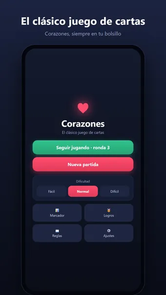
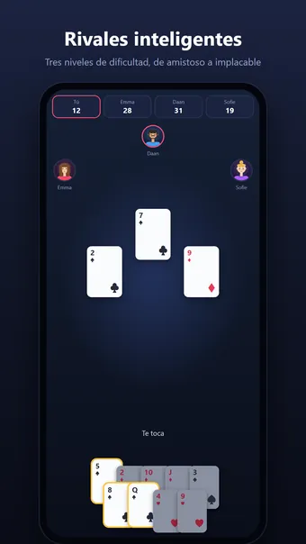
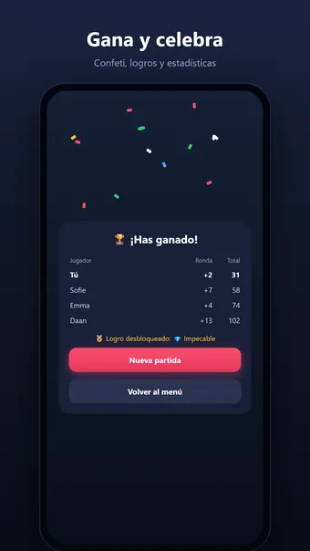
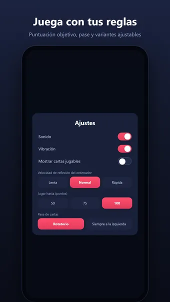

Sobre Corazones
Juega a Corazones, el clásico juego de cartas: en cualquier momento y lugar, totalmente sin conexión. Tú contra tres jugadores de la máquina: ¿quién acumula menos puntos de penalización?
Cómo se juega
Cada corazón en tus bazas cuesta 1 punto, y la dama de picas nada menos que 13. Sigue el palo, esquiva los puntos... o arriésgate a cazar la luna llevándote los 26 puntos de penalización en una sola ronda para endosárselos a tus rivales. La partida termina cuando alguien alcanza la puntuación objetivo; gana quien tenga menos puntos.
¿No conoces las reglas? Los consejos integrados te explican el juego paso a paso mientras juegas.
Rivales inteligentes
Tres niveles de dificultad, de amistoso a implacable. En Difícil, la máquina cuenta cartas, se queda sin palos a propósito e incluso detecta cuando intentas cazar la luna en secreto.
Juega con tus reglas
- Puntuación objetivo ajustable: 50, 75 o 100 puntos
- Pases: rotativo, siempre a la izquierda, siempre a la derecha o nunca
- Variantes: la jota de diamantes vale −10, la dama de picas abre corazones
- Puntuación de la luna: +26 para el resto o −26 para quien la caza
Y además
- Consigue 18 logros, desde tu primera victoria hasta una partida impecable
- Estadísticas detalladas: rachas de victorias, puntuación media y más
- Pausa la partida y retómala más tarde justo donde la dejaste
- Sonido y vibración (se pueden desactivar en los ajustes)
- Funciona en horizontal y en tablets
Gratis. La app muestra anuncios, que puedes quitar con una compra opcional; no necesitas cuenta.
Preguntas frecuentes
¿Corazones es gratis?
Sí. Corazones se descarga y se juega gratis. La app muestra anuncios, que puedes quitar con una compra opcional dentro de la app.
¿Corazones funciona sin conexión?
Sí. Corazones funciona sin conexión a internet, así que puedes jugar en el avión, en el tren o en cualquier sitio sin wifi.
¿Necesito una cuenta para jugar a Corazones?
No. No hay que registrarse ni iniciar sesión: abre la app y juega. Tus partidas y ajustes se quedan en tu propio dispositivo.
¿Cómo se juega a Corazones?
Cada corazón en tus bazas cuesta 1 punto, y la dama de picas nada menos que 13. Sigue el palo, esquiva los puntos... o arriésgate a cazar la luna llevándote los 26 puntos de penalización en una sola ronda para endosárselos a tus rivales. La partida termina cuando alguien alcanza la puntuación objetivo; gana quien tenga menos puntos. ¿No conoces las reglas? Los consejos integrados te explican el juego paso a paso mientras juegas.
¿Dónde puedo descargar Corazones?
Corazones está disponible para móviles y tabletas Android en Google Play. Usa el botón de la parte superior de esta página.
Otros juegos que te pueden gustar
Sudoku
El sudoku clásico. Puzles infinitos y un reto nuevo cada día.
Google PlayBuscaminas
El buscaminas clásico. Campos de minas infinitos y un reto nuevo cada día.
Google Play30 Seconds
¡Describe 5 palabras en 30 segundos! Un divertido juego de palabras con amigos.
Google PlayInformación legal
Aquí encontrarás los documentos legales que se aplican a Corazones.
Contacto
¿Preguntas, comentarios o una solicitud de privacidad? Escribe a joostmuijsenberg.dev@gmail.com.